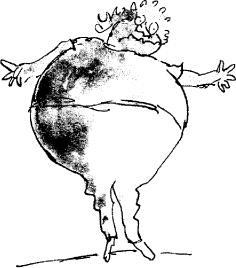
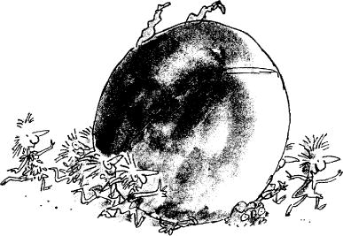

‘This gum,’ Mr Wonka went on, ‘is my latest, my greatest, my most fascinating invention! It’s a chewing-gum meal! It’s… it’s… it’s… That tiny little strip of gum lying there is a whole three-course dinner all by itself!’
‘What sort of nonsense is this?’ said one of the fathers.
‘My dear sir!’ cried Mr Wonka, ‘when I start selling this gum in the shops it will change everything! It will be the end of all kitchens and all cooking! There will be no more shopping to do! No more buying of meat and groceries! There’ll be no knives and forks at mealtimes! No plates! No washing up! No rubbish! No mess! Just a little strip of Wonka’s magic chewing-gum – and that’s all you’ll ever need at breakfast, lunch, and supper! This piece of gum I’ve just made happens to be tomato soup, roast beef, and blueberry pie, but you can have almost anything you want!’
‘What do you mean, it’s tomato soup, roast beef, and blueberry pie?’ said Violet Beauregarde.
‘If you were to start chewing it,’ said Mr Wonka, ‘then that is exactly what you would get on the menu. It’s absolutely amazing! You can actually feel the food going down your throat and into your tummy! And you can taste it perfectly! And it fills you up! It satisfies you! It’s terrific!’
‘It’s utterly impossible,’ said Veruca Salt.
‘Just so long as it’s gum,’ shouted Violet Beauregarde, ‘just so long as it’s a piece of gum and I can chew it, then that’s for me!’ And quickly she took her own world-record piece of chewing-gum out of her mouth and stuck it behind her left ear. ‘Come on, Mr Wonka,’ she said, ‘hand over this magic gum of yours and we’ll see if the thing works.’
‘Now, Violet,’ said Mrs Beauregarde, her mother; ‘don’t let’s do anything silly, Violet.’
‘I want the gum!’ Violet said obstinately. ‘What’s so silly?’
‘I would rather you didn’t take it,’ Mr Wonka told her gently. ‘You see, I haven’t got it quite right yet. There are still one or two things…’
‘Oh, to blazes with that!’ said Violet, and suddenly, before Mr Wonka could stop her, she shot out a fat hand and grabbed the stick of gum out of the little drawer and popped it into her mouth. At once, her huge, well-trained jaws started chewing away on it like a pair of tongs.
‘Don’t!’ said Mr Wonka.
‘Fabulous!’ shouted Violet. ‘It’s tomato soup! It’s hot and creamy and delicious! I can feel it running down my throat!’
‘Stop!’ said Mr Wonka. ‘The gum isn’t ready yet! It’s not right!’
‘Of course it’s right!’ said Violet. ‘It’s working beautifully! Oh my, what lovely soup this is!’
‘Spit it out!’ said Mr Wonka.
‘It’s changing!’ shouted Violet, chewing and grinning both at the same time. ‘The second course is coming up! It’s roast beef! It’s tender and juicy! Oh boy, what a flavour! The baked potato is marvellous, too! It’s got a crispy skin and it’s all filled with butter inside!’
‘But how in-teresting, Violet,’ said Mrs Beauregarde. ‘You are a clever girl.’
‘Keep chewing, baby!’ said Mr Beauregarde. ‘Keep right on chewing! This is a great day for the Beauregardes! Our little girl is the first person in the world to have a chewing-gum meal!’
Everybody was watching Violet Beauregarde as she stood there chewing this extraordinary gum. Little Charlie Bucket was staring at her absolutely spellbound, watching her huge rubbery lips as they pressed and unpressed with the chewing, and Grandpa Joe stood beside him, gaping at the girl. Mr Wonka was wringing his hands and saying, ‘No, no, no, no, no! It isn’t ready for eating! It isn’t right! You mustn’t do it!’
‘Blueberry pie and cream!’ shouted Violet. ‘Here it comes! Oh my, it’s perfect! It’s beautiful! It’s… it’s exactly as though I’m swallowing it! It’s as though I’m chewing and swallowing great big spoonfuls of the most marvellous blueberry pie in the world!’
‘Good heavens, girl!’ shrieked Mrs Beauregarde suddenly, staring at Violet, ‘what’s happening to your nose!’
‘Oh, be quiet, mother, and let me finish!’ said Violet.
‘It’s turning blue!’ screamed Mrs Beauregarde. ‘Your nose is turning blue as a blueberry!’
‘Your mother is right!’ shouted Mr Beauregarde. ‘Your whole nose has gone purple!’
‘What do you mean?’ said Violet, still chewing away.
‘Your cheeks!’ screamed Mrs Beauregarde. ‘They’re turning blue as well! So is your chin! Your whole face is turning blue!’
‘Spit that gum out at once!’ ordered Mr Beauregarde.
‘Mercy! Save us!’ yelled Mrs Beauregarde. ‘The girl’s going blue and purple all over! Even her hair is changing colour! Violet, you’re turning violet, Violet! What is happening to you?’
T told you I hadn’t got it quite right,’ sighed Mr Wonka, shaking his head sadly.
‘I’ll say you haven’t!’ cried Mrs Beauregarde. ‘Just look at the girl now!’
Everybody was staring at Violet. And what a terrible, peculiar sight she was! Her face and hands and legs and neck, in fact the skin all over her body, as well as her great big mop of curly hair, had turned a brilliant, purplish-blue, the colour of blueberry juice!
‘It always goes wrong when we come to the dessert,’ sighed Mr Wonka. ‘It’s the blueberry pie that does it. But I’ll get it right one day, you wait and see.’
‘Violet,’ screamed Mrs Beauregarde, ‘you’re swelling up!’
‘I feel sick,’ Violet said.
‘You’re swelling up!’ screamed Mrs Beauregarde again.
‘I feel most peculiar!’ gasped Violet.
‘I’m not surprised!’ said Mr Beauregarde.
‘Great heavens, girl!’ screeched Mrs Beauregarde. ‘You’re blowing up like a balloon!’
‘Like a blueberry,’ said Mr Wonka.
‘Call a doctor!’ shouted Mr Beauregarde.
‘Prick her with a pin!’ said one of the other fathers.
‘Save her!’ cried Mrs Beauregarde, wringing her hands.
But there was no saving her now. Her body was swelling up and changing shape at such a rate that within a minute it had turned into nothing less than an enormous round blue ball – a gigantic blueberry, in fact – and all that remained of Violet Beauregarde herself was a tiny pair of legs and a tiny pair of arms sticking out of the great round fruit and little head on top.
‘It always happens like that,’ sighed Mr Wonka. ‘I’ve tried it twenty times in the Testing Room on twenty Oompa-Loompas, and every one of them finished up as a blueberry. It’s most annoying. I just can’t understand it.’
‘But I don’t want a blueberry for a daughter!’ yelled Mrs Beauregarde. ‘Put her back to what she was this instant!’
Mr Wonka clicked his fingers, and ten Oompa-Loompas appeared immediately at his side.
‘Roll Miss Beauregarde into the boat,’ he said to them, ‘and take her along to the Juicing Room at once.’
‘The Juicing Room?’ cried Mrs Beauregarde. ‘What are they going to do to her there?’
‘Squeeze her,’ said Mr Wonka. ‘We’ve got to squeeze the juice out of her immediately. After that, we’ll just have to see how she comes out. But don’t worry, my dear Mrs Beauregarde. We’ll get her repaired if it’s the last thing we do. I am sorry about it all, I really am…’
Already the ten Oompa-Loompas were rolling the enormous blueberry across the floor of the Inventing Room towards the door that led to the chocolate river where the boat was waiting. Mr and Mrs Beauregarde hurried after them. The rest of the party, including little Charlie Bucket and Grandpa Joe, stood absolutely still and watched them go.
‘Listen!’ whispered Charlie. ‘Listen, Grandpa! The Oompa-Loompas in the boat outside are starting to sing!’
The voices, one hundred of them singing together, came loud and clear into the room:
‘Dear friends, we surely all agree
There’s almost nothing worse to see
Than some repulsive little bum
Who’s always chewing chewing-gum.
(It’s very near as bad as those
Who sit around and pick the nose.)
So please believe us when we say
That chewing gum will never pay;
This sticky habits bound to send
The chewer to a sticky end.
Did any of you ever know
A person called Miss Bigelow?
This dreadful woman saw no wrong
In chewing, chewing all day long.
She chewed while bathing in the tub,
She chewed while dancing at her club,
She chewed in church and on the bus;
It really was quite ludicrous!
And when she couldn’t find her gum,
She’d chew up the linoleum,
Or anything that happened near –
A pair of boots, the postman’s ear,
Or other people’s underclothes,
And once she chewed her boy-friend’s nose.
She went on chewing till, at last,
Her chewing muscles grew so vast
That from her face her giant chin
Stuck out just like a violin.
For years and years she chewed away,
Consuming fifty bits a day,
Until one summer’s eve, alas,
A horrid business came to pass.
Miss Bigelow went late to bed,
For half an hour she lay and read,
Chewing and chewing all the while
Like some great clockwork crocodile.
At last, she put her gum away
Upon a special little tray,
And settled back and went to sleep –
(She managed this by counting sheep).
But now, how strange! Although she slept,
Those massive jaws of hers still kept
On chewing, chewing through the night,
Even with nothing there to bite.
They were, you see, in such a groove
They positively had to move.
And very grim it was to hear
In pitchy darkness, loud and clear,
This sleeping woman’s great big trap
Opening and shutting, snap-snap-snap!
Faster and faster, chop-chop-chop,
The noise went on, it wouldn’t stop.
Until at last her jaws decide
To pause and open extra wide,
And with the most tremendous chew
They bit the lady’s tongue-in two.
Thereafter, just from chewing gum,
Miss Bigelow was always dumb,
And spent her life shut up in some
Disgusting sanatorium.
And that is why we’ll try so hard
To save Miss Violet Beauregarde
From suffering an equal fate.
She’s still quite young. It’s not too late,
Provided she survives the cure.
We hope she does. We can’t be sure.’